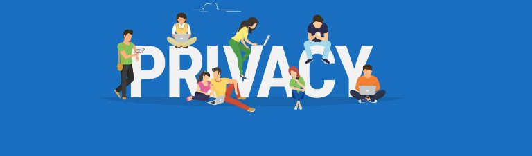

Digital Citizenship
a person who develops the skills and knowledge to effectively use the internet and other digital technology, especially in order to participate responsibly in social and civic activities
Digital Etiquette
According to the Cambridge dictionary, Digital Eiquette is a set of rules and customs that control accepted behaviour in a particular social group or social situations. For example, The World Wide Web.
Research by PEW research center.
The research by PEW research center shows that 90% of cell phone owners are rewriting social norms regarding what is rude and what is acceptable behaviour when people are together on the internet. This alarming thought is a high concern and requires an intervention.
TIPS ON HOW TO BEHAVE APROPIATELY ON THE INTERNET.
1. Respect other people's privacy

The use of the internet in our modern world has been a risk taken by each internet user. This is due to the high level of cybercrime in the world. This form of behaviour is unacceptable and should not be condoned on the World Wide Web. Therefore Internet Users should avoid this form of action.
2. Be ethical
As an internet user, never forget to uphold your values. Illege use of the internet such as downloading of illegal music and copyright infringement is an unlawful act. This form of behaviour is unethical and requires prosecution by the law.
3. Understand the public nature of social networks
Don’t post highly personal information, don’t post invitations that will make others feel left out, and don’t post hurtful messages. Many will see your posts, including relatives, potential employers, and college admissions officers.
4. Share important knowledge.
Information is shared on the Internet from one user to the other with the aim of gaining knowledge. This is why there is the need to ensure that information shared on the internet is of expert knowledge with intention to educate internet users positively. Also, never should internet users post anything disingenuous on the World Wide Web.All information should be of accurate contribution and clear to the understanding of the audience
5. Think before you type
Thinking before you speak is a good habit to develop, to avoid causing trouble in your life, whether in your online relationships with friends. And if it's unavoidable to say something negative, thinking before you type helps you to be more tactful and understand how to offset negativity with something positive
6.Build a Positive Brand
All internet users should present a positive upfront on the internet. One should not upload unwanted materials which is of no value on the internet. A positive brand will attract positive reactions from viewers and respect from the society.
Cyberbullying
The activity of using the internet to harm or frighten another person,especially by sending them unpleasantmessages (Cambridge Dictionary)
The internet is one common place for cyberbullying and this is due to the high number of people having access to the medium. 27% of people admitted they have been bullied online while 23% of the others confessed to have bullied someone online. These statistics by the DoSomething.org proves that young people that experience cyberbullying are of greater risk such as self-harm and suicidal thoughts.
Ways to avoid being cyberbullied.
1. Inform you Parent or Guardian
Most victims refuse to inform their parents. Only 1 in 10 teen victims decide to alarm their parents on the traumatising experience of cyberbullying. If this issue is not addressed, there is a high risk of the user being mentally disturbed. Always alert an authority so you could be protected from bullying online.
2. Protect your privacy online.
Once private messages, pictures, texts and other content that are private are posted to be seen by the public, a bully could get hold of the copy and use it to harm you. It's best not to post anything inappropriate and embarrasing online.
3. Protect your passwords.
When you make your password is easy for someone to hijack you social account, or devices, it can lead to a lot of problems. If a bully is able to log in to your social media accounts, the could post mean things under your name or harass your friends. to prevent this, do things like,
1) Don't write password down, store them in your phone.
2) Change passwords regularly.
3) Choose password that are difficult to guess.
4. Limit access to your devices and accounts
Inernet users should be careful of whom they give access to their personal information so that potential bullies would not be able to use it against them. Most important, just avoid giving people access to your personal information.